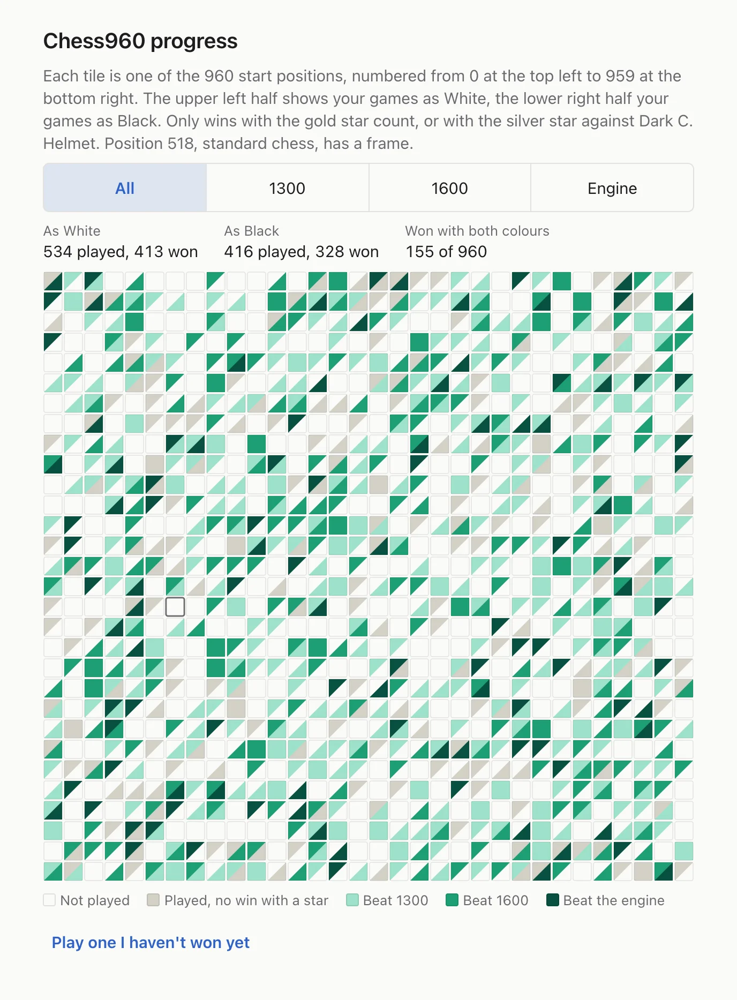
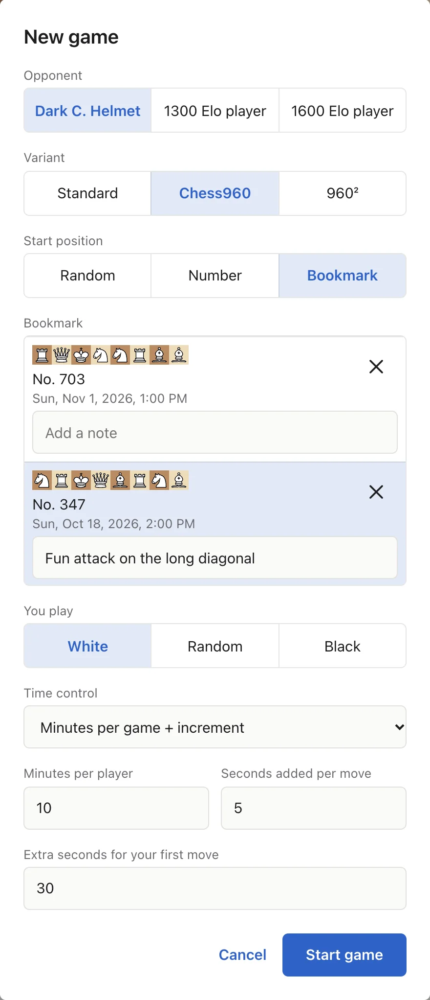

A strong chess (and chess960) engine in your browser
I love Chess960, the variant with the shuffled back rank. Why do I love it? Because at the beginning, you have to fundamentally create a
little opening theory for the starting position in your mind. Which pawns are unprotected? Where do you develop your pieces? What do you attack? If
you fail to make a good plan at the beginning, your game will end horrible in a way standard chess games can't, once you have a clue about openings.
I had matches where all my pieces blocked each other behind badly placed pawns, matches where my opponent could dive into unprotected space in my
position.
Two things bothered me: few engines really take it seriously, and losing every single game to a full-strength engine gets old pretty quickly.
So now there is this app. The engine runs on your own device, you need no account, and your games stay in your browser.
On chess and backgammon servers I am darkhelmet, after my favorite sci-fi character. So this is the dark chess helmet. Dark C. Helmet. Sorry.
How strong is it?
Confession: the whole thing is vibe coded. Yes, this is how you write this kind of software today, no way around it. One of the good things about
using Claude to write your software is its meticulousness. Where I would go "seems to be quite strong", it measures strength and error of its measurement
in hour-long engine matches. These are matches of the native engine on my pretty fast Mac (M5 Max), one thread each, 20 seconds per game plus 0.2 seconds per move:
Opponent
Variant
Games
Elo difference
HIARCS 15.4
Chess960
400
+361 ± 43
HIARCS 15.4
Standard
400
+298 ± 34
Shredder 14
Chess960
1,000
+23 ± 16
Shredder 14
Standard
1,000
−45 ± 13
Stockfish 19 with 1/12 of the time
Chess960
400
+8 ± 24
The HIARCS matches are from an older build (83). The newer engine has not played HIARCS again but should be even stronger.
A later Chess960 match against Shredder 14 with 3 minutes per game: 350 games, −16 ± 25.
So it beats HIARCS. Against Shredder it is roughly even, probably a little weaker. It came out slightly ahead in these fast Chess960 games and behind in standard chess, and with 3 minutes per game Shredder was a little ahead in Chess960 as well. And Stockfish needs only about a twelfth of the thinking time to play even. A fine engine, then. Just not Stockfish. As a single number I would guess about 3400 Elo (?), with that question mark.
And in the browser? On my Mac it reaches about 70% of the native speed, about 24 million nodes per second with 8 threads. Double thinking time turned out to be worth +77 ± 10 Elo in 1,000 games against itself. That makes the browser version about 40 Elo weaker at this time control. I can live with that.
Mobile devices: I'm firmly in the Apple camp, I'm afraid. On my iPad I get about 8 million positions per second, on my iPhone about 2.5. That should still
put it into the "above 3000 ELO" range.
Technical details
How the engine works/was built:
A neural network (NNUE), trained from scratch on about 1.1 billion positions from the engine's own games.
A modern alpha-beta search with up to 16 threads in the browser.
Search constants tuned over 20,000 game pairs, half of them from Chess960 starts.
A record of what each step was worth. Search changes and new nets had to prove themselves in engine matches, and the numbers are all written down.
The embarrassing part
Some years ago I wrote a chess engine on my own. It got stuck at about 2000 Elo. This one I built with Claude as a pair programmer.
Nearly all the ideas came from Claude, I just made a few decisions. Then I got a bit carried away.
What I found particularly impressive: one day at 8 I had only an engine, written by Claude in C (very low-level, fast programming language). I sat
down and wrote a long specification that completely described how I want the web UI to look. 2 hours later it was ready. Bug-free. Needed
a bit of tweaking to get rid of the "this looks like an AI has designed it" look, and add a few stupid ideas only a human can have (see below).
What I built for Chess960
A net that knows Chess960
My earlier nets had never seen a Chess960 opening. Adding games from random start positions was worth about +150 Elo in Chess960. For the current net, 80% of the new training games started from Chess960 positions, which brought another 30 Elo or so.
All 960 start positions
At the beginning you can pick a random one or enter its number from 0 to 959. If you wish, you can play from the same 960 position a hundred times,
until you get it.
Time to stare at the position
This is the one thing I really wanted. I find it outright stupid that there are no special time controls for Chess960. You need some additional, initial thinking time. So here, you get extra seconds for your first move, 30 by default, whichever colour you play. They run before your clock starts. Make the first move and unused ones are gone. For me this makes a huge difference.
A nice progress view
A square of triangles shows you which of the 960 variations you have won, as white, as black, against 1300, 1600, full engine. And maybe something special happens if you beat the full engine in all 960 variations? Who knows?
Hint: You only need a "silver star" to gain an entry. No undo, no hint, but if you give the engine only very little time, and take all the time you want, a victory will count. Still, the engine at 1 minute per game is still tough to beat.

An opening book for all 960
The app's little opening book doesn't only include openings for standard chess, but also thousands of Chess 960. Of course, thousands of moves for 960 different positions is only a few moves per position. It still gives the engine a head start - often the first two moves decide on the structure of your setup.
Bookmarks
When you enjoyed a particular Chess 960 match, and want to play it again, just bookmark it, and use that bookmark the next time you start a new game.

Chess 960²
For those who want even more variation, the app supports Chess 960² - a variation also known as "Fischer Double Random Chess". As this variation can lead to severely unfair starting positions, the engine has pre-computed the winning chances of every variation (yes, the whole million), and will serve only variations with an evaluation in the range of -0.5 to +0.5.
You can bookmark Chess 960² starting positions like in normal Chess960. As Chess 960² is so random, the opening book is disabled.
Other features
The star
All the chess apps I know have tournament modes, resigning, offering draw. I don't really see the point of doing this when playing against an engine. So Dark C. Helmet has the star. At the beginning of a game, the star lights up (bottom screen area). As soon as you hit undo or look for a hint, the star goes out. If you lose on time, the golden star turns silver. Only "starry" games count for progress of 960 games. Some day I'll add star statistics that show you how many games you finished - maybe even won - with the star being lit.
Weaker opponents
Next to the engine you can play a 1300 and a 1600 Elo player. They learned from real Lichess games of players around 1300 or 1600 range, and I calibrated them against how much real players lose per move. Both use their full thinking time. Lichess Chess960 ratings run lower, so 1300 and 1600 here mean the standard chess scale. I am still not 100% convinced by their playing style, but I find it better than what most engines give you - you know the "plays perfect for 20 moves then blunders a rook" kind of "1600 Elo".
BTW if you really want a great poor opponent for challenging games, try Maia Chess. Awesome how much
it feels like playing a real human. Have work to do to get there.
Optional cross-device sync
You want your Chess960 progress to be your progress, synced between all devices. Likewise, you want to have the same bookmarks on all devices. The app supports this with a simple and anonymous device sync: on your first device you create a code, which are five words, separated by a "-" symbol. The server will then create a storage that can be accessed by every device with that code. On your other devices, use "I have a code", enter the same code, and from that moment on, the devices will sync your 960 progress and your bookmarks across all your devices. You don't need to set this up. It is entirely up to you.
Explore
Leave the Explore page open in a browser tab, and it searches opening positions the book does not know yet, one after the other. You can look at the list of everything it analyzed, line by line from move 1. Pure curiosity on my part, I wanted to see it.
A word about the opening book
Okay, that was probably not the most brilliant idea. I found going for an open-source opening book boring, loved the idea of an opening book
that learns, keeps improving, a bit like AlphaGo Zero for Chess openings. The result is, well, underwhelming. Don't expect an opponent that floods you with perfect opening theory. Right now my book contains 20,000 moves, all searched by the engine. And by now it even knows the first moves of Ruy Lopez or Italian... And sometimes makes a few book moves in 960 positions. But hey, it is exploring more as I write this. Someday it will be a real opening library, with 100% engine knowledge.
What else?
Playing
Time per engine move, minutes per game, minutes plus increment, or FIDE classical.
Click, drag, or click only the target square if just one of your pieces can go there.
One premove, undo, a hint as an arrow, and an evaluation at any time.
If you run out of time, the game goes on and your clock shows the overrun in red. A reload does not lose your game.
Analyzing
Endless analysis with score, depth, speed and the line in normal notation. Try your own moves on the board without touching the game.
Game review with up to 5 minutes per position, an evaluation graph, marks for ?!, ? and ?? (lichess thresholds) and a summary per side.
Setup with FEN import and export, in standard chess and Chess960.
The rest
Export your book to a file, or merge one from a file.
Choose threads and hash size, light or dark theme. The layout adapts to phone, tablet and desktop.
What is still missing
Quite a bit, actually:
PGN import and export.
A list of your past games.
More than one analysis line.
Installing the app and using it offline.
Star statistics
A 1900 player.
The best: truly free, respecting your privacy
Games, book and settings are stored in your browser on this device. If you clear the site's data, they are gone. There is no account, and the app has no analytics.
The one exception is your choice: you can offer your deep searches to the master book that everybody can merge. I have to approve your browser first. It then sends its book results to my server, plus a name for the browser if you enter one. The switch is in Settings.
This topic is important to me. Too many web apps try to lure you into giving personal data away, or start flooding you with intrusive ads.
Dark C. Helmet doesn't do any of this. I wrote it to figure out whether you can vibe code a 3000+ chess engine. And because I like creating
software. It's all free, available for you, source code open for everyone on Github.
I do not keep any statistics of how much it is used, how it is used, on purpose.
Try it
The first start automatically downloads about 5 MB of engine, plus 13 MB if you pick a human-like player. On a desktop it then uses all your cores but one while it thinks, might get a bit noisy. On a phone you can use it to make your hands warm in cold winter evenings, if you wish.